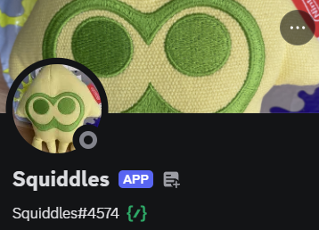

Welcome to the page for the Squiddles discord bot!
I am the main dev of the Squiddles discord bot, which currently is still a WIP.
The Squiddles discord bot can currently: play a audio file in a vc, stop playing the audio file and it can also send gifs.
I do not know what else to add to the Squiddles discord bot, which is why it is still a WIP.
The Squiddles discord bot is owned by me and I have been the only to make changes to it so far.
Also since the Squddles discord bot is not yet public, it is not up 24/7.
Development of Squiddles is being paused until Q3-Q4 2027 so I have time to work on my school work.
